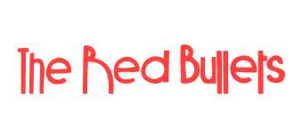

About EdwardsApps
The software came last. The work came first.
EdwardsApps wasn't founded as a software company. It grew out of working lives — Edwards Surfacing, the family asphalt firm; Impact Buckingham, the charity Peter Edwards founded; The Mitre, the pub he kept for nine years; and The Red Bullets, the band he fronts — and out of the tools he built because those jobs needed them.
Four worlds
Four working lives. One habit of building what works.
-

Family-run since 2006
Founded by Peter's father, Ken Edwards, after thirty years in the paving industry — a small portacabin, the family name on the door, and Wembley Stadium won within months of opening. Simon Edwards learned the craft on the tools and now leads the firm as Managing Director; Peter built the office. Twenty years on it's still family-run, laying roads, driveways and car parks across Buckinghamshire, London and the South East from its home at Great Horwood — see edwardssurfacing.co.uk.
-

Registered charity 1216036
Impact Buckingham supports families in Buckingham and the surrounding villages who are facing financial hardship. It began at The Mitre: a radio report about neighbours dreading the cost of Christmas struck a nerve, and a plan to send out a few hampers from the pub snowballed — local businesses pledged, the regulars rallied, and in December 2025 it became a registered charity, delivering 75 festive hampers through partner schools within four weeks. Peter founded it and chairs its trustees — and the paperwork that comes with running a charity properly is where Almoner began. Read the full story at impactbuckingham.com.
-

Nine years behind the bar
For nine years from May 2017, Peter kept The Mitre in Buckingham until handing it on recently. Under his care it became a premier live-music venue and a real-ale champion: CAMRA Pub of the Year for Milton Keynes & North Bucks in 2020, 2023 and 2025, and Buckinghamshire's Pub of the Year in 2025. And it's where Impact Buckingham was born, built by the regulars at the bar.
-

Formed 2007
Peter's band — formed with his brother Mark as an outlet for Peter's songs, many co-written with lyricist and bass player John Bailey. They toured Dubai in 2008 and the French Alps in 2009, released Drama in the Drawing Room in 2012, and played the British Grand Prix to a crowd of seven thousand, with guitarist Stuart Hartland and singer-songwriter Ben Weston completing the five-piece. A loyal following keeps the band growing and evolving — catch them at theredbullets.com.
The story
Twenty years in the making.
-
2005
After more than thirty years in the paving industry, Ken Edwards decides to realise a lifelong ambition and start his own surfacing firm — with the support of his wife Diane, and encouragement from long-time friend and accountant James Birch.
-
2006
Edwards Surfacing opens from a small portacabin, the family name proudly on the door. Sons Simon and Peter join in the earliest days — Simon out on the tools learning the craft first-hand, Peter in the office building the admin and business processes from scratch.
-
Months later
The young firm is awarded the asphalt surfacing works at the new Wembley Stadium — tight deadlines, huge tonnages, immense pressure on a world-famous project. Delivering it proves what the business is capable of and sets the course for everything after.
-
2007
While the firm grows, the music does too: Peter and his brother Mark form The Red Bullets — going on to tour Dubai and the French Alps, and later to play the British Grand Prix.
-
2008
Out of the portacabin and into a permanent home at Great Horwood, Buckinghamshire — where the firm, its crews and its burgundy-and-grey livery remain today.
-
May 2017
Peter takes on The Mitre in Buckingham — thrown in at the deep end behind the bar on day one. Over nine years it becomes a premier live-music venue and a three-time CAMRA Pub of the Year.
-
Along the way
In the office at Great Horwood, Peter builds the job book nobody sold — scheduling, costing, invoicing, CIS — because the firm needed it. It becomes CrewBook, and it still runs Edwards Surfacing every working day.
-
December 2025
An idea that began with a radio report a couple of winters earlier — neighbours dreading the cost of Christmas — comes good at The Mitre. A plan to send out a few hampers snowballs: local businesses pledge, the regulars give up their evenings, and Impact Buckingham registers with the Charity Commission — delivering 75 festive hampers through partner schools within four weeks, £4,800 raised in cash and kind, every penny to local families.
-
2026
Edwards Surfacing marks twenty years in business — still family-run, with Simon as Managing Director. Impact Buckingham steps out on its own, planning support for families through the summer holidays. And the tools built along the way become EdwardsApps: CrewBook for contractors, OurSpace for households, Almoner for charities.
Today
Software built from the inside.
EdwardsApps is those tools, grown up and offered to firms like the ones they came from. CrewBook for surfacing and groundworks contractors, OurSpace for households, Almoner for charities — and custom builds for the jobs that don't have a product yet. Edwards Surfacing still runs on CrewBook every working day, which means the flagship product is still tested the hard way: on real jobs, in real weather, on real Monday mornings.
Talk to the person who built it.
Questions about the products, the firm or the history — email peter@edwardsapps.co.uk and you'll get Peter, not a ticket number.
Email Peter